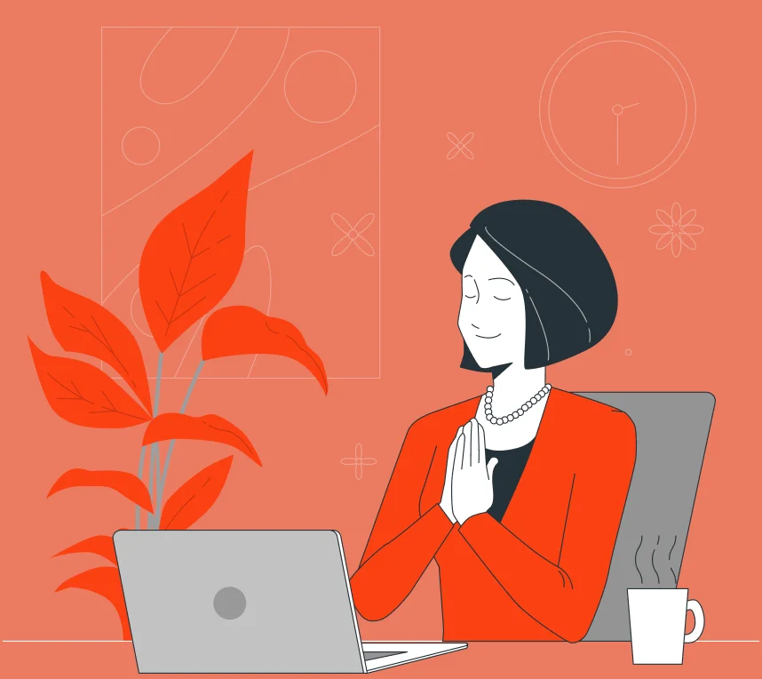
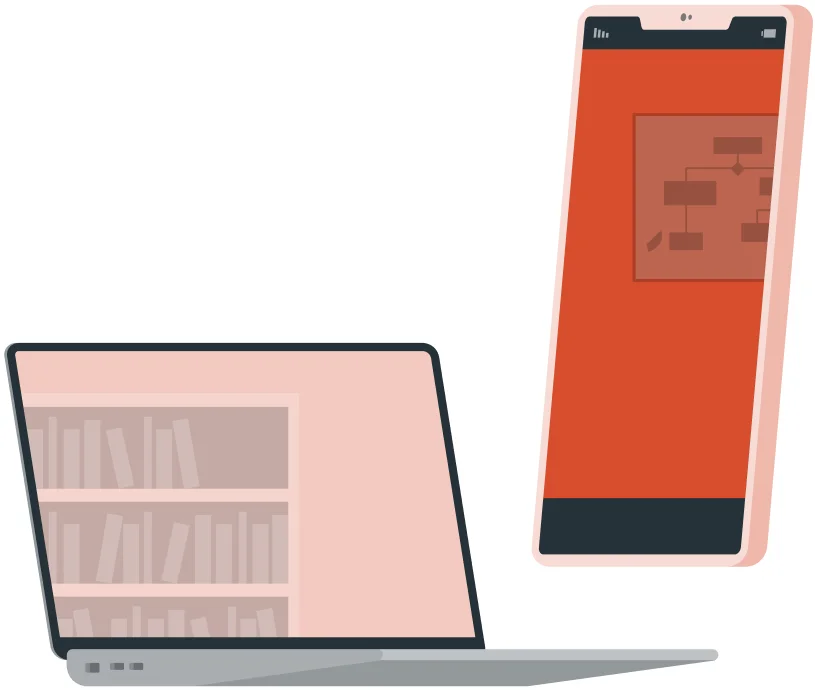
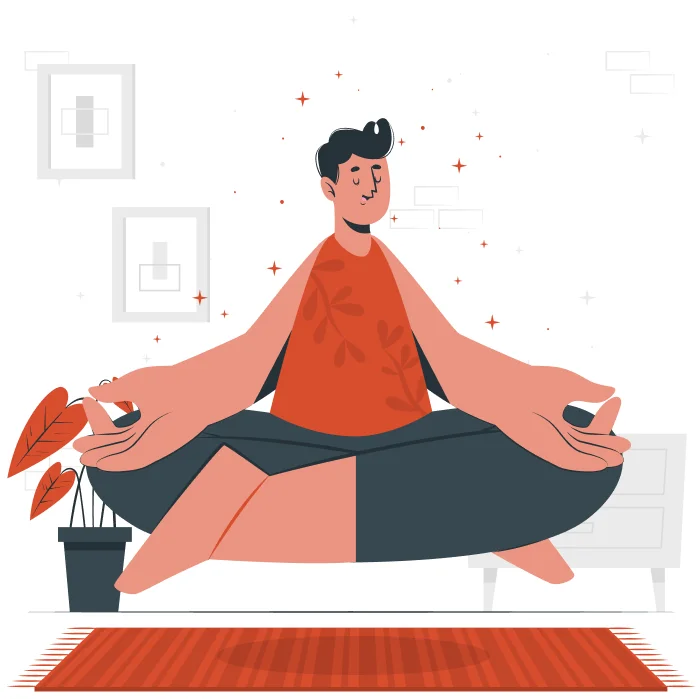

Te acompaño hacia el desarrollo pleno de tu personalidad

Sobre mí
Sueño con un mundo donde la gente disfrute en equilibrio su vida, y se considere la importancia de la Salud Mental como parte de nuestra salud integral.
Me he formado internacionalmente tanto en Argentina, como en Brasil, España y Francia, donde resido actualmente. Desde aquí, propongo un espacio seguro, neutro, libre de prejuicios, en donde acompaño a diario procesos de adolescentes y adultos de todo el mundo.
Especialidades
Desarrollo personal - Cambio de proyecto de vida - Dificultades en vínculos - Preocupaciones laborales - Baja autoestima - Estados postraumáticos - Trastornos de ansiedad - Ansiedad Social - Trastorno de Ansiedad Generalizada - Trastornos del estado del ánimo - Depresión - Gestión de las emociones - Entrenamiento en habilidades comunicativas - Crisis vitales - Reubicación y transición migratoria - Aislamiento y soledad - Manejo del estrés
Psicoterapia online
Videollamada en tiempo real
45 min de sesion
Importante disponer de un espacio tranquilo y silencioso para trabajar cómodamente.

Un dispositivo con:
Cámara Micrófono Conexión a internet
Diversos estudios han demostrado que la psicoterapia online es igual de eficaz que la psicoterapia convencional. Al poder programar sesiones en los momentos más convenientes, permite recibir el apoyo necesario sin comprometer las responsabilidades diarias. La psicoterapia online es una manera efectiva de estar cerca sin importar la ubicación del psicoterapeuta y la persona consultante. Gracias a su accesibilidad, es posible sostener el proceso durante viajes temporales o traslados permanentes, sin cambiar de profesional.
Psicología analítica
Utilizo el modelo teórico de la psicología analítica de Carl Jung, así como herramientas y técnicas concernientes a diferentes escuelas de la psicología, siempre que estas se dirijan a alcanzar nuestros objetivos terapéuticos específicos preestablecidos para dar respuesta a tu problemática, aliviando o disminuyendo los síntomas y su malestar.
En sesiones semanales cara a cara, establecemos un vínculo profundo y transformador para comprender cómo los desafíos impactan en tu crecimiento.
El estilo de la terapia puede incluir rasgos psicoeducativos, técnicas expresivas y actividades a realizar entre sesiones. Enfocando en tu proceso de individuación, te acompaño hacia el desarrollo pleno de tu personalidad, integrando Complejos, incorporando habilidades y explorando tu dimensión espiritual. Juntos, navegamos a través de miedos y deseos para lograr una visión integral de tu ser, arribar a una comprensión más profunda de ti mismo y garantizar un funcionamiento emocional equilibrado.
Carl Jung
Psicoterapia individual para adultos o adolescentes

El objetivo es permitir a quien consulta, resolver por sí mismo (con mi ayuda como guía) los conflictos internos que trae a sesión, brindando herramientas y estrategias para modificarlos. Se busca desarmar patrones que interfieran en la vida de la persona que consulta, y en sus relaciones con los demás; también propiciando el autoconocimiento, la autoaceptación, y la sensación de plenitud y bienestar. Durante la primera sesión se realiza una evaluación diagnóstica de los temas expuestos, así como la construcción de un programa terapéutico. Las sesiones duran 45 minutos y suelen realizarse semanalmente. La duración total del proceso terapéutico es variable y depende de las necesidades y evolución del caso particular.
Terapia de parejas
Este es un espacio de mediación para parejas que están pasando por un momento difícil y necesitan apoyo terapéutico o bien para reforzar aspectos sanos ya existentes en el vínculo. El objetivo es promover una relación funcional y satisfactoria para ambos miembros de la pareja mediante el aprendizaje de elementos que resulten en un vínculo adecuado y amoroso. Durante la primera sesión se sugiere un plan de tratamiento personalizado. Las sesiones duran aproximadamente una hora. La duración del proceso y la frecuencia de las sesiones se establecen según el caso.
Testimonios
John
"Ms. Juarez is more than a therapist, she is an exceptional guide on the path to recovery. Her genuine concern and compassion were instrumental in overcoming my struggle with depression. Thanks to her support, I have rediscovered joy in my life and have tools to face difficult times. I highly recommend her services".
Andrés
"Expreso mi agradecimiento a la licenciada Juarez por su dedicación y habilidades excepcionales. Desde el primer momento en que inicié el proceso psicoterapéutico con ella, sentí una conexión auténtica y un compromiso genuino hacia mi bienestar. Con su ayuda, logré aliviar el estrés laboral que parecía abrumador en mi vida, en un espacio seguro donde pude explorar mis pensamientos, sentimientos y emociones de manera profunda y significativa. Gracias por cambiar no solo mi perspectiva, sino también mi capacidad para enfrentar los desafíos con resiliencia y claridad".
Élodie
"Je suis extrêmement reconnaissante pour la chaleur et l'empathie que j'ai trouvées chez Romina. Leur approche humaine a rendu chaque séance très confortable pour moi. Grâce à leurs conseils, j'ai réussi à surmonter mes problèmes d'anxiété qui m'affectaient au quotidien. Aujourd'hui, je me sens fort et plus équilibré. J'ai de nouveaux outils pour affronter les hauts et les bas de la vie. Merci !"
Testimonios
John
"Ms. Juarez is more than a therapist, she is an exceptional guide on the path to recovery. Her genuine concern and compassion were instrumental in overcoming my struggle with depression. Thanks to her support, I have rediscovered joy in my life and have tools to face difficult times. I highly recommend her services".
Andrés
"Expreso mi agradecimiento a la licenciada Juarez por su dedicación y habilidades excepcionales. Desde el primer momento en que inicié el proceso psicoterapéutico con ella, sentí una conexión auténtica y un compromiso genuino hacia mi bienestar. Con su ayuda, logré aliviar el estrés laboral que parecía abrumador en mi vida, en un espacio seguro donde pude explorar mis pensamientos, sentimientos y emociones de manera profunda y significativa. Gracias por cambiar no solo mi perspectiva, sino también mi capacidad para enfrentar los desafíos con resiliencia y claridad".
Élodie
"Je suis extrêmement reconnaissante pour la chaleur et l'empathie que j'ai trouvées chez Romina. Leur approche humaine a rendu chaque séance très confortable pour moi. Grâce à leurs conseils, j'ai réussi à surmonter mes problèmes d'anxiété qui m'affectaient au quotidien. Aujourd'hui, je me sens fort et plus équilibré. J'ai de nouveaux outils pour affronter les hauts et les bas de la vie. Merci !"